Guía completa de la plataforma, paso a paso y con capturas: acceso, mapa en vivo, vehículos, historial, eventos, alertas, reportes, comandos, compartir, geocercas, rutas, POI, programaciones, operaciones, mantenimiento, gastos, tareas, conductores, tablero y monitoreo de grupo.
Versión
Interfaz nueva (v2) · octubre de 2026
Cuenta usada en las capturas
Usuario de prueba de Operaciones, con cuatro volquetes y la operación «Acarreo prueba»
Novedades
Las funciones nuevas de esta versión están marcadas con NUEVO
Contenido
Acceso y primeros pasos
Mapa en vivo (Vehículos)
Colores de estado y de velocidad
Ficha del vehículo: alta, sensores, iconos, cola y colores
Historial y sus modos
Eventos y cómo atenderlos
Alertas (reglas)
Reportes
Enviar comandos
Compartir vehículos
Geocercas
Rutas y programaciones de ruta
Puntos de interés (POI)
Operaciones (control de vueltas) NUEVO
Seguridad · Control de flota NUEVO
Mantenimiento (servicios)
Gastos
Tareas y conductores
Tablero (panel de control)
Monitoreo de grupo
Ajustes de cuenta
Preguntas frecuentes
1. Acceso y primeros pasos
1.1 Iniciar sesión
Abre la dirección de la plataforma en el navegador (Chrome, Edge o Firefox actualizados).
Escribe tu correo y tu contraseña. Marca «Recuérdame» si usas tu propio equipo.
Pulsa Ingresar. Si olvidaste la contraseña, usa «¿No puede acceder?» y sigue el correo de recuperación.
Las apps móviles están en Google Play y App Store (enlaces en la misma pantalla).
Pantalla de acceso.
1.2 La pantalla principal
Menú lateral (izquierda): Tablero, Vehículos (mapa), Monitoreo de grupo, Eventos, Alertas, Historial, Reportes, Enviar comando, Compartir, Mantenimiento, Gastos, Tareas, Conductores, Geocercas, Rutas, Programaciones de ruta, Operaciones y POI. Abajo: cambiar idioma y volver a la interfaz clásica. El botón ☰ lo expande con nombres.
Barra superior: buscador global (Ctrl+K), tema claro/oscuro (sol/luna), ajustes de cuenta (engranaje), notificaciones (campana) y tu usuario (iniciales).
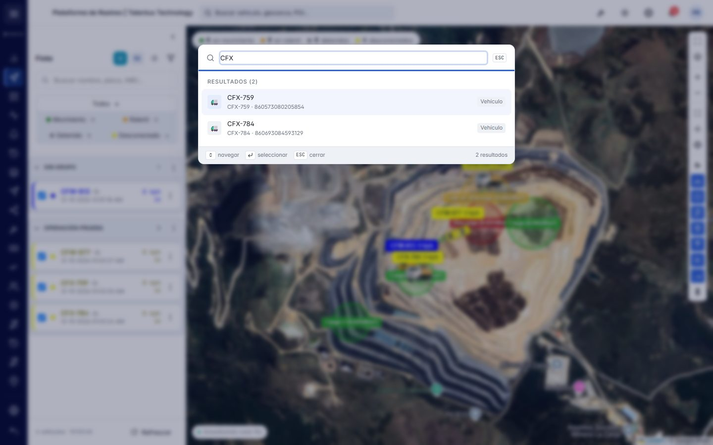
Buscador global: escribe parte del nombre, placa o IMEI y salta al vehículo, geocerca o POI.
1.3 Menú de usuario
Pulsa tus iniciales arriba a la derecha: ajustes de cuenta, cambiar contraseña, confirmar email, idioma, cambiar densidad (más o menos espacio en las listas), volver a la interfaz clásica y cerrar sesión.
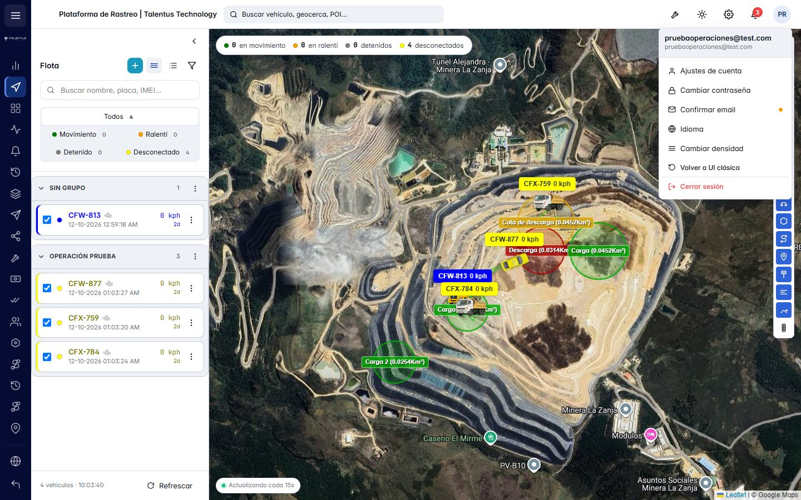
Menú de usuario.
2. Mapa en vivo (Vehículos)
Es la pantalla de trabajo diario. A la izquierda, la lista de la flota; a la derecha, el mapa. Se actualiza sola cada 15 segundos.
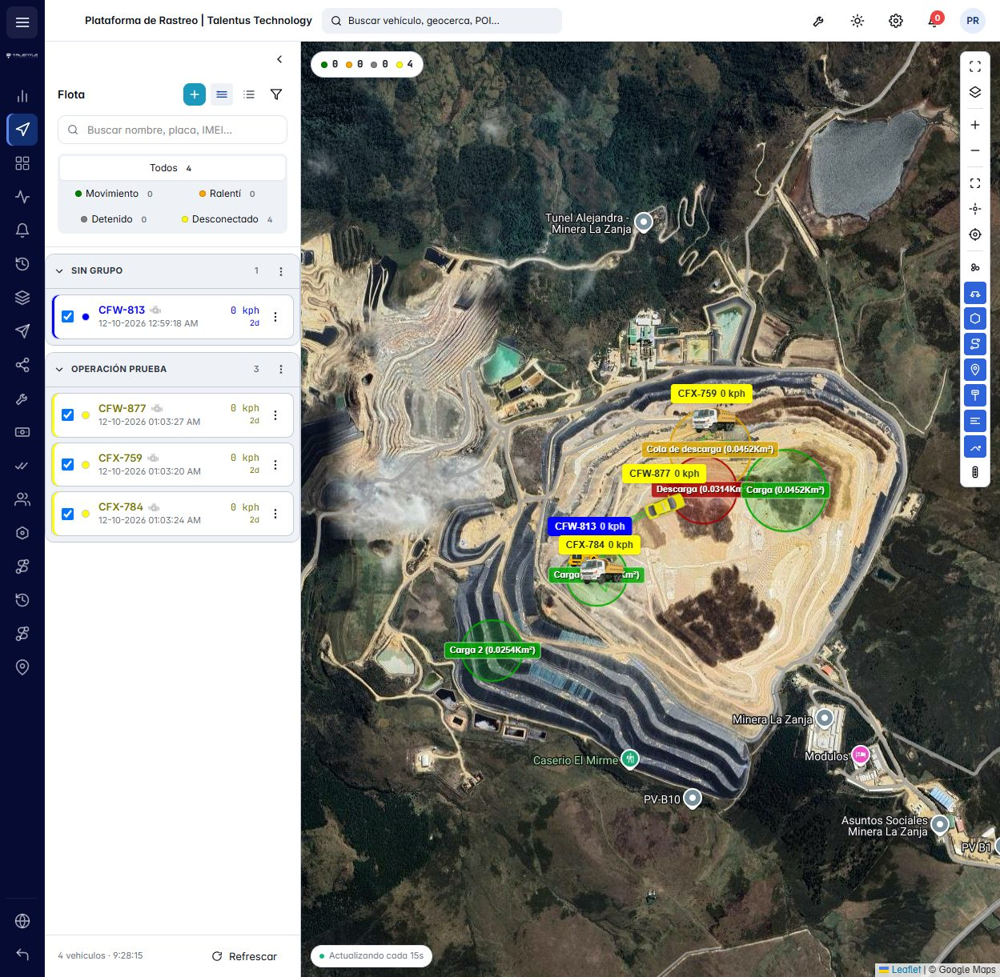
Mapa en vivo con la flota agrupada y las geocercas.
2.1 Panel de la flota
Buscar por nombre, placa o IMEI.
Filtros de estado: Todos, Movimiento, Ralentí, Detenido, Desconectado (con el conteo de cada uno).
Botones junto a «Flota»: vista plana o por grupos, y filtro avanzado.
Cada fila muestra el nombre, un punto de color con el estado, la velocidad, la hora de la última posición y el tiempo en ese estado. La casilla de la izquierda muestra u oculta el vehículo en el mapa.
En la vista por grupos, el menú ⋮ del grupo permite Agregar nuevo, Editar y Eliminar grupos (título y vehículos que incluye).
2.2 Ficha rápida del vehículo
Al pulsar una fila se abre la ficha: estado, velocidad, sensores principales (RPM, combustible, temperatura, ignición, odómetro, horómetro, rumbo), dirección, última señal, coordenadas, conductor y el detalle de todos los sensores. Abajo: Centrar en mapa y Ver historial.
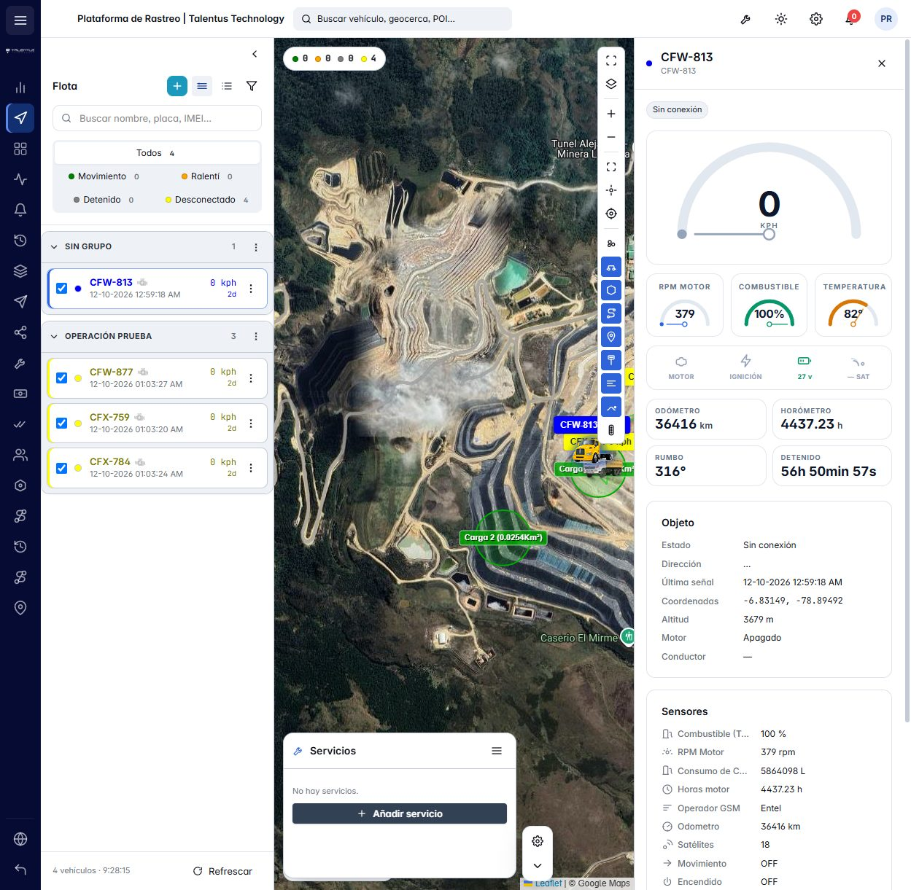
Ficha del vehículo con sensores y última posición.
2.3 Menú de acciones del vehículo (⋮)
Opción
Qué hace
Mostrar historial (última hora / hoy / ayer)
Abre el Historial con ese rango ya cargado.
Enviar comando
Abre el formulario de comando GPRS o SMS para ese vehículo (capítulo 9).
Editar
Abre la ficha completa del vehículo (capítulo 4).
Seguir
El mapa sigue al vehículo mientras se mueve.
Alertas
Alertas que aplican a ese vehículo y su vigencia.
Compartir / Enlaces compartidos
Crea o revisa enlaces públicos de seguimiento (capítulo 10).
Historial de cambios
Registro de ediciones de la ficha.
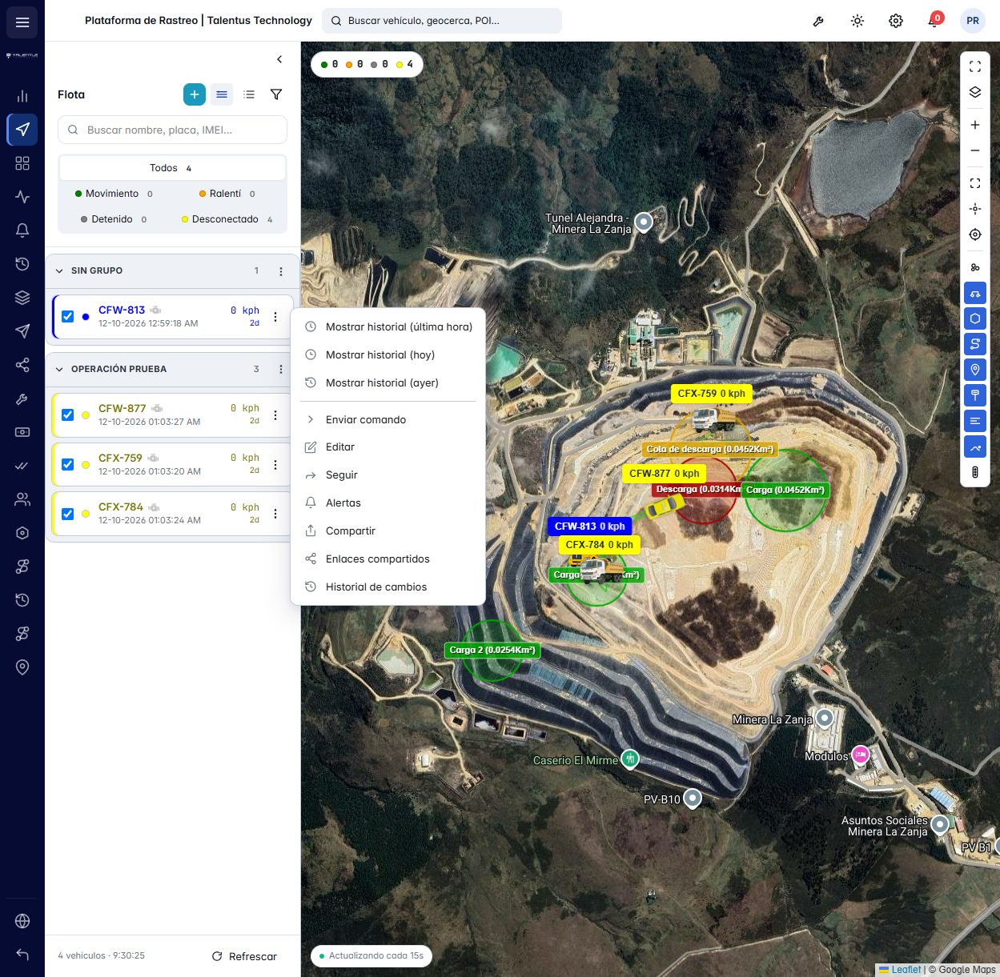
Menú ⋮ de un vehículo.
2.4 Controles del mapa (barra derecha)
Pantalla completa, ajustar a la flota visible, seguimiento automático, mi ubicación, zoom.
Capas: OpenStreetMap, Google Normal / Híbrido / Satelital / Terreno / Tráfico, Carto, LocationIQ.
Interruptores: agrupar vehículos cercanos, mostrar vehículos, geocercas, rutas, POI, hitos KM, nombres, cola de recorrido y tráfico en vivo.
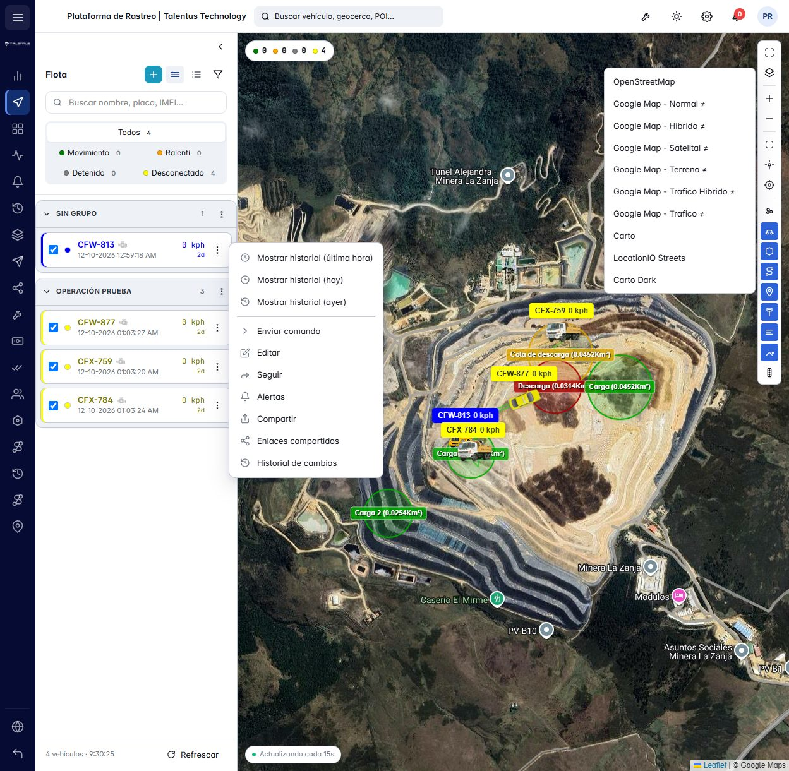
Selector de capas base.
2.5 Vista de lista (tabla de vehículos)
El icono «Ver lista de vehículos» abre la tabla completa con búsqueda, filtros por estado, grupo, modelo y protocolo, columnas configurables y exportación. Desde aquí se agregan y editan vehículos.
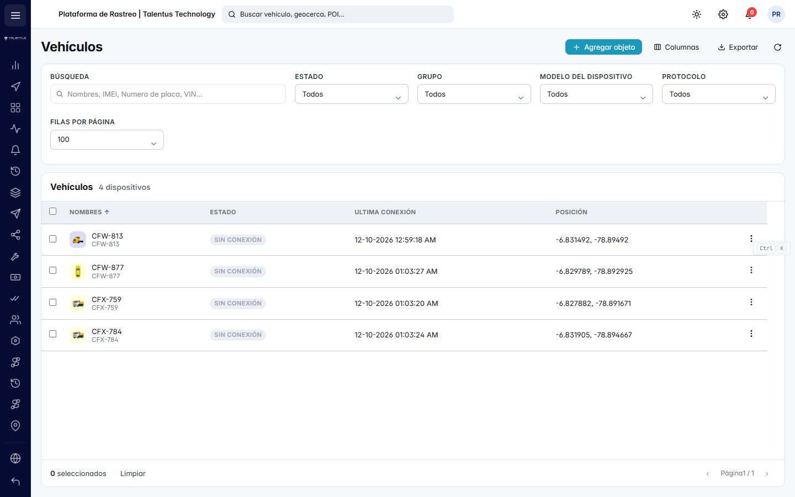
Vehículos en tabla.
3. Colores de estado y de velocidad
3.1 Color de estado (punto de la lista y etiqueta del mapa)
Color
Estado
Significado
Verde
En movimiento
Transmite y supera la velocidad mínima de movimiento.
Naranja
Ralentí
Detenido con el motor encendido.
Gris
Detenido
Quieto con motor apagado (o sin sensor de encendido).
Amarillo
Desconectado
Sin transmitir más tiempo del límite configurado.
Rojo
Exceso de velocidad
Velocidad por encima del límite general.
En esta versión los colores son los mismos en la lista, en la etiqueta del mapa y en la interfaz clásica. Un vehículo que dejó de transmitir ya no se muestra como si estuviera activo.
3.2 Color por velocidad (marcador y recorrido)
Cada vehículo puede colorear el recorrido del historial y su marcador en vivo según la velocidad, con rangos propios. Se configura en la ficha del vehículo, pestaña Cola:
Colores del recorrido: por viajes (un color por viaje), único, por velocidad (rangos) o por sensor (si un sensor define rangos).
Colorear el marcador según la velocidad: tiñe la etiqueta y pone un halo detrás del icono. Dentro de una geocerca con límite mandan dos colores especiales: «al acercarse» y «al superarlo», con un aviso de X km/h antes del límite.
Los rangos se editan con la barra de tramos: + añade uno, ↺ restaura los valores por defecto, × quita el tramo. El primer tramo empieza en 1 km/h: a 0 el vehículo está parado y no se colorea.
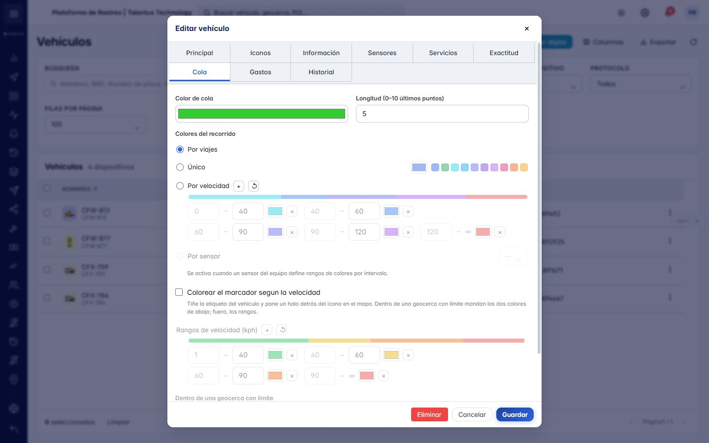
Pestaña Cola: color de cola, colores del recorrido y rangos de velocidad del marcador.
4. Ficha del vehículo
Desde la tabla de vehículos (Agregar objeto o Editar en el menú ⋮ de la fila) o desde el menú ⋮ del mapa (Editar).
4.1 Alta de un vehículo
Vehículos (tabla) → + Agregar objeto.
Principal: nombre (normalmente la placa) e IMEI del GPS. Si el equipo requiere activación, aparece el bloque «Activación de dispositivo GPS».
Información: grupo, tipo de dispositivo, SIM, placa, VIN, propietario, fechas de instalación y vencimiento, medición de combustible y costo.
Iconos: tipo de icono e imagen del vehículo en el mapa.
Sensores: cada dato que envía el GPS (encendido, movimiento, batería, odómetro, horas motor, combustible, temperatura, RPM, operador GSM…). Con + se agrega un sensor y con «Copiar a…» se copian a otros vehículos. El sensor de Encendido es el que distingue ralentí de detenido.
Exactitud: filtros de posiciones (saltos, satélites, velocidad mínima).
Cola: color y longitud de la cola de recorrido, colores por velocidad (capítulo 3).
Servicios, Gastos e Historial (registro de reactivaciones y notas) se explican en sus capítulos.
Guardar.
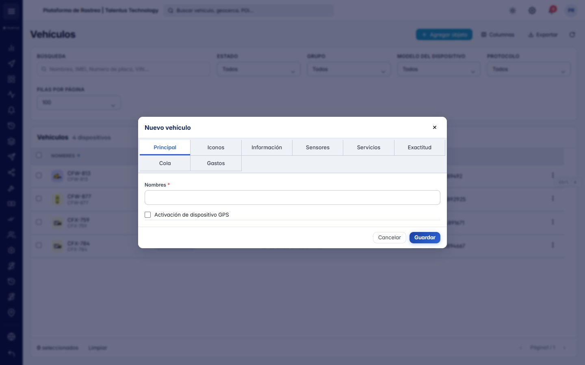
Nuevo vehículo: nombre e IMEI.
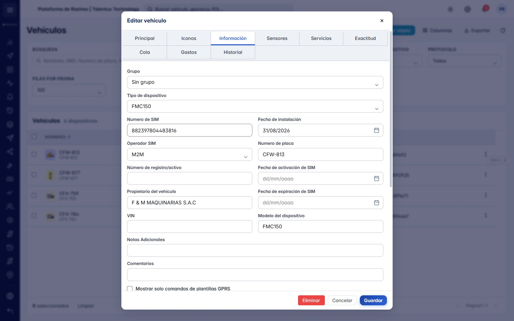
Pestaña Información del vehículo.
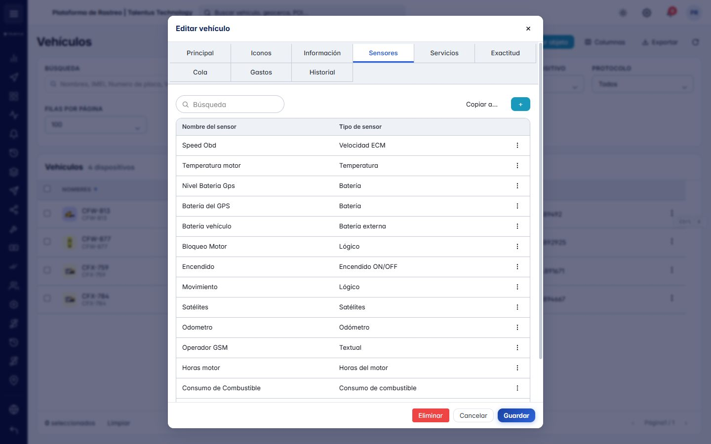
Pestaña Sensores.
El límite de vehículos de tu cuenta lo fija el administrador. Si el alta falla por límite, contacta a soporte.
5. Historial y sus modos
Menú → Historial. Elige el dispositivo.
Elige la fecha: el selector admite fecha y hora exactas (HH:MM) para inicio y fin, y atajos (hoy, ayer, esta semana). Con la × vuelves a hoy.
Avanzado: paradas mayores a X minutos, ajustar a la carretera, mostrar coordenadas no válidas.
Pulsa Mostrar historial.
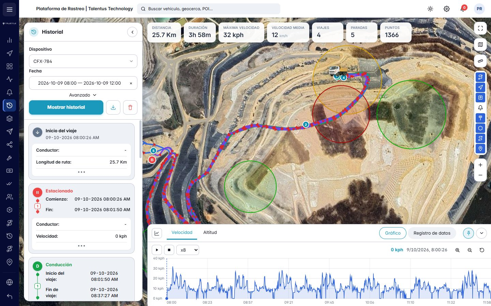
Historial: recorrido en el mapa, lista de viajes y paradas a la izquierda, gráfica abajo.
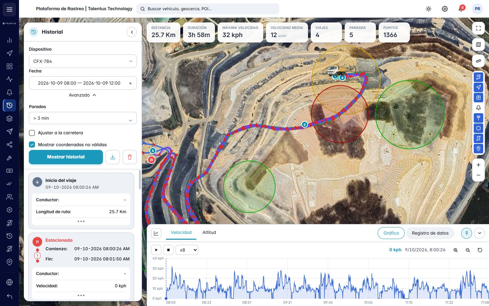
Opciones avanzadas del historial.
5.1 Lo que ves
Resumen: inicio del viaje, conductor, longitud de ruta.
Línea de tiempo: alterna «Conducción» (con velocidad máxima y ▶ para reproducir ese tramo) y «Estacionado» (inicio, fin, duración). Al pulsar uno, el mapa se centra ahí.
Mapa: recorrido coloreado según la configuración del vehículo (por viajes, único o por velocidad), flechas de sentido, paradas y eventos.
Controles derechos: descargar (KML/GPX/CSV), pantalla completa, tipo de mapa, regla de distancia, y mostrar/ocultar recorrido, flechas, paradas, eventos, hitos KM, geocercas, rutas y POI.
5.2 Modos del panel inferior
Gráfica: velocidad y sensores en el tiempo. Pasa el cursor para ver hora y valor; el punto se marca en el mapa. Zoom con + / −.
Registro de datos (Data log): tabla de posiciones con hora, velocidad, coordenadas y sensores; se puede ordenar, paginar y borrar registros.
Reproducción: ▶ reproduce el recorrido a x1, x4, x8, x16, x32 o x120 con la hora y velocidad en vivo; la barra de progreso permite saltar.
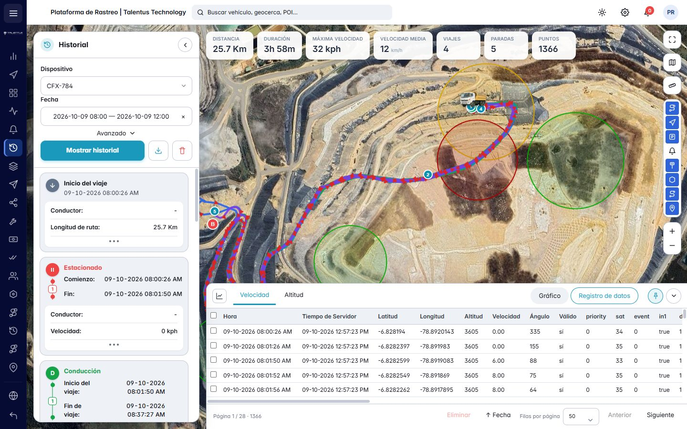
Registro de datos del historial.
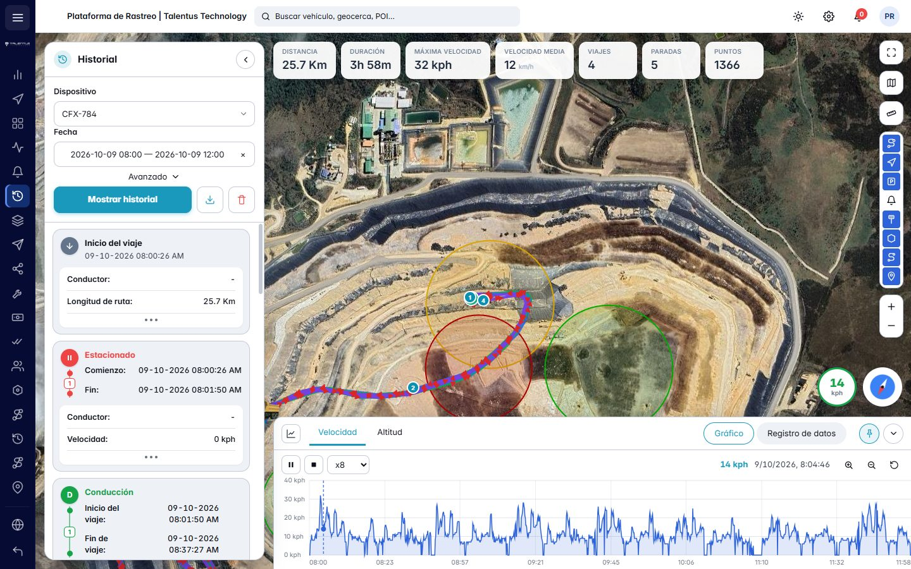
Reproducción del recorrido con control de velocidad.
Desde el menú ⋮ de un vehículo en el mapa tienes atajos: historial de la última hora, de hoy y de ayer. Desde Operaciones, «Ver tramo en mapa» abre el historial con el rango exacto del tramo.
6. Eventos y cómo atenderlos
Un evento es un aviso generado por una alerta (capítulo 7): exceso de velocidad, entrada a geocerca, parada en operación, SOS, etc. La campana de la barra superior muestra los no leídos.
Menú → Eventos. Filtra por periodo (última hora, 6 h, 24 h, 3 días, 7 días o rango de fechas), tipo de evento, vehículo o texto.
Pulsa un evento: el mapa se centra en el punto y abre su tarjeta con hora, ubicación, velocidad y coordenadas.
Desde la tarjeta: Historial abre el recorrido alrededor de esa hora; Eliminar lo borra. Si el administrador activó el registro de llamadas, aparece también Atender, que guarda el tipo de respuesta, la fecha de la llamada y observaciones (se consultan en «Acciones de llamada»).
Exportar descarga la lista filtrada; Borrar todo limpia los eventos del rango.
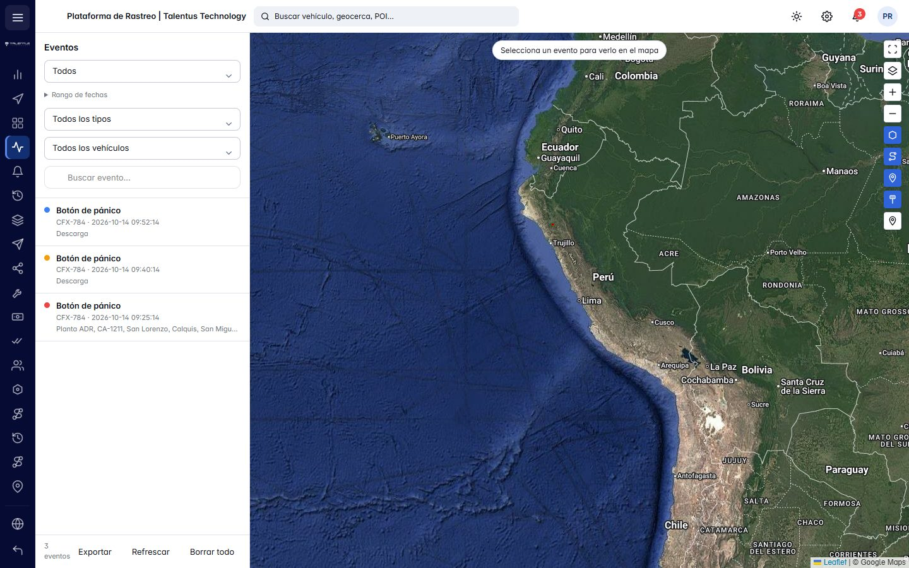
Eventos: lista a la izquierda, mapa a la derecha.
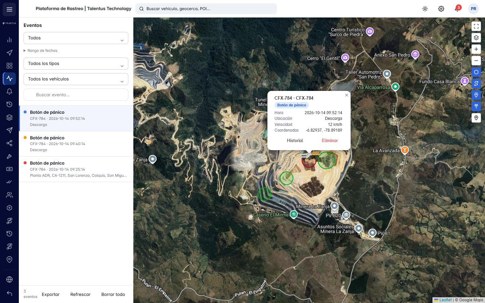
Tarjeta de un evento en el mapa.
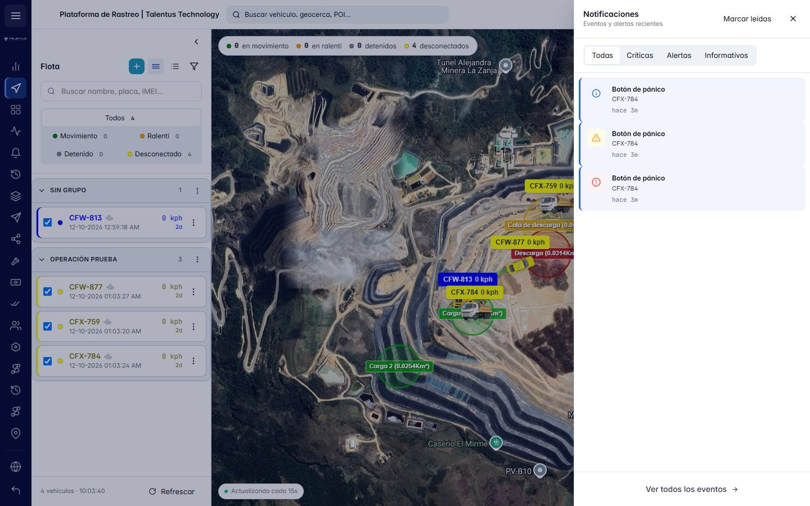
Campana de notificaciones.
Procedimiento sugerido para atender un evento crítico (SOS, pánico, parada no autorizada): 1) abrir el evento y verificar ubicación y hora; 2) revisar el historial de los últimos minutos; 3) contactar al conductor; 4) registrar la llamada con «Atender» (si está habilitado) o anotarla en la tarea del vehículo; 5) si procede, enviar un comando (bloqueo, pedir posición).
7. Alertas (reglas)
Una alerta es una regla: para estos vehículos, cuando pase esto, avísame así. Menú → Alertas: la lista muestra estado, nombre, tipo, alcance, notificaciones y horario; el interruptor activa o pausa cada regla.
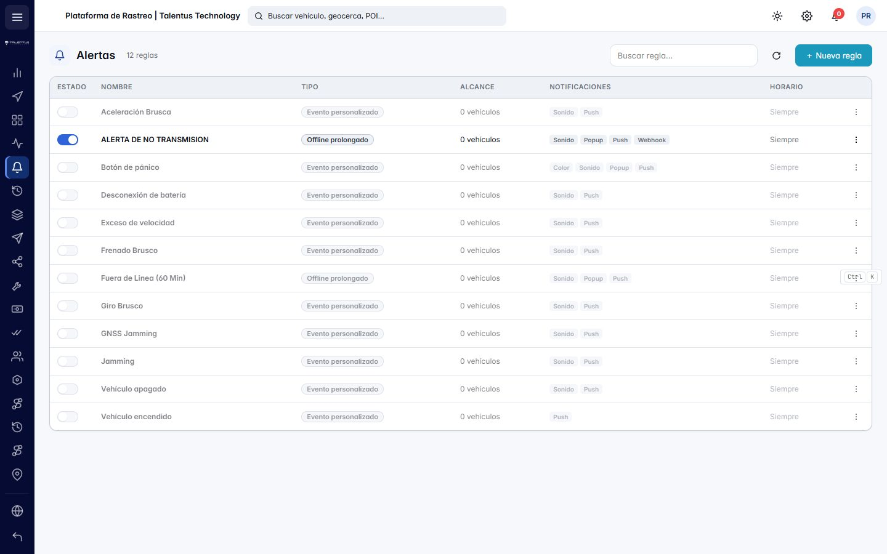
Reglas de alerta del usuario.
7.1 Crear una alerta
+ Nueva regla. Escribe el nombre y deja «Activa».
Vehículos: marca los vehículos o «Seleccionar todos» (incluye los futuros).
Tipo: elige el disparador y sus parámetros (por ejemplo, km/h del exceso, minutos de parada, segundos de parada en operación).
Geocercas: solo para alertas de entrada/salida; elige sentido y zonas.
Horario: si activas «Restringir por horario», pinta en la cuadrícula los días y horas en que la alerta aplica.
Notificaciones: color en la lista, sonido, ventana emergente, push al móvil, correo, SMS, webhook; «ignorar si se repite en N minutos» evita avisos en cadena.
Comando: opcionalmente, un comando que se envía al vehículo al dispararse (por ejemplo, bloqueo de motor).
Crear alerta.
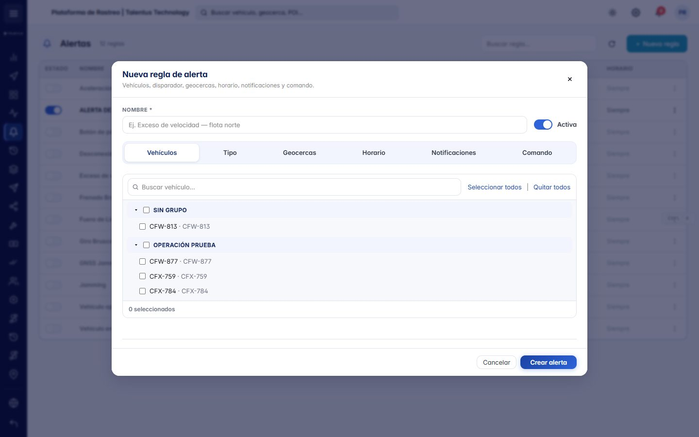
Nueva regla: pestaña Vehículos.
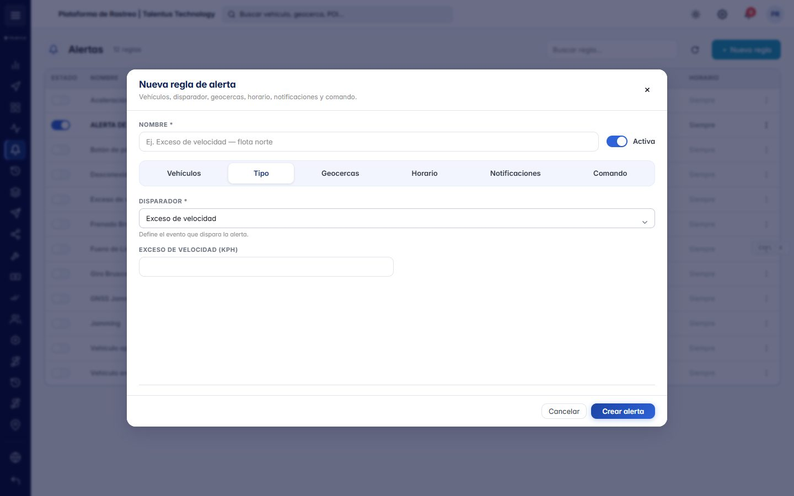
Pestaña Tipo: disparador y parámetros.
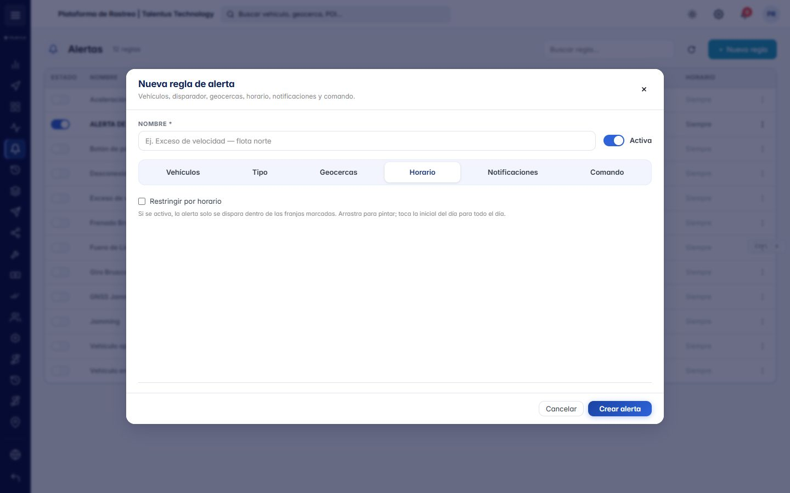
Pestaña Horario.
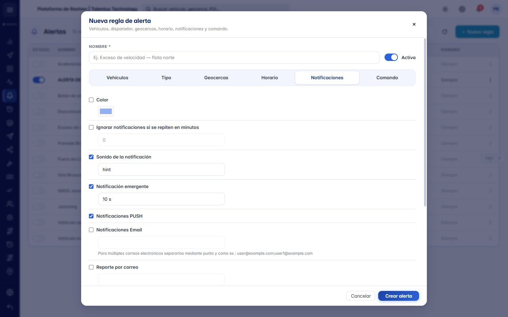
Pestaña Notificaciones.
7.2 Tipos de alerta disponibles
Grupo
Disparadores
Velocidad
Exceso de velocidad; Exceso de velocidad en geocerca (usa el límite de la zona, con tolerancia y duración mínima).
Geocercas
Entrada, Salida, Entrada/Salida. También «PDI – duración de parada» y «PDI – duración en ralentí» para puntos de interés.
Duraciones
Estacionado, Tiempo, Fuera de línea, Movimiento, Encendido, Ralentí.
Motor y movimiento
Encendido ON/OFF, Comienzo del movimiento (y con filtro), Desenchufado, Alarma del equipo, Valor de sensor, Distancia.
Conductor
Cambio de conductor, Autorización de cambio de conductor.
Parada en operación: vehículo en tramo detenido fuera de zona autorizada más de X segundos.
Administrativas
Estado de la tarea, Vencimiento del dispositivo.
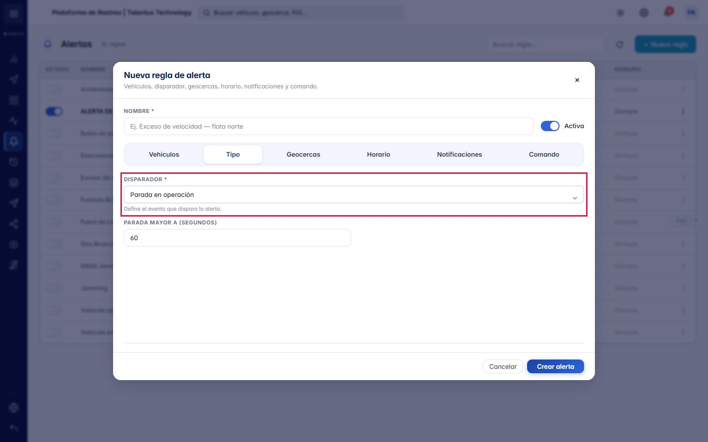
Disparador «Parada en operación».
8. Reportes
Menú → Reportes. La página tiene dos pestañas: Guardados (plantillas que repites) y Registros (reportes ya generados, para descargarlos de nuevo).
Pulsa + (o entra desde el menú, que ya abre el formulario).
Tipo: elige el reporte. Los parámetros propios aparecen debajo (por ejemplo, operaciones y totales en «Control de vueltas»).
Formato: HTML (en pantalla), PDF, XLSX o CSV. Periodo: hoy, ayer, semana, mes o personalizado con fecha y hora.
Dispositivos y, si aplica, geocercas. «Controlar días y horas» limita a una franja (solo turno de noche, por ejemplo).
Opciones: paradas mayores a X minutos, omitir resultados vacíos, zonas en vez de direcciones, mostrar direcciones.
Generar abre el reporte. Guardar lo deja en Guardados. Enviar a email con programación diaria, semanal o mensual lo manda solo.
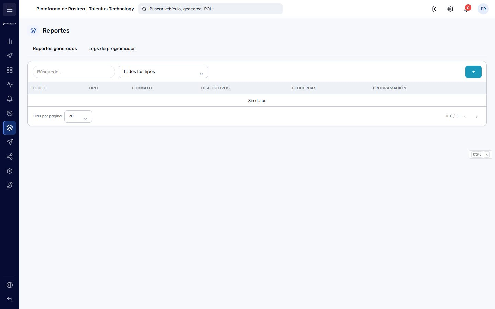
Página de reportes.
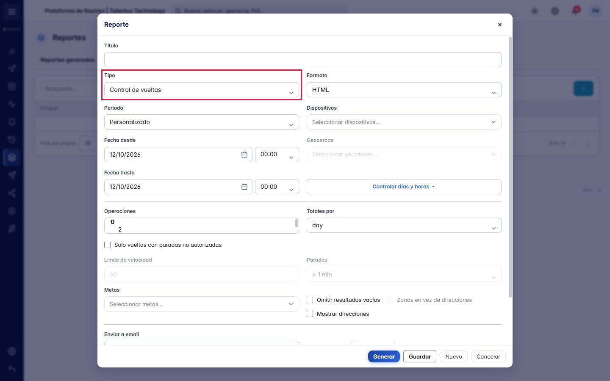
Formulario: tipo, formato, periodo, dispositivos y programación por correo.
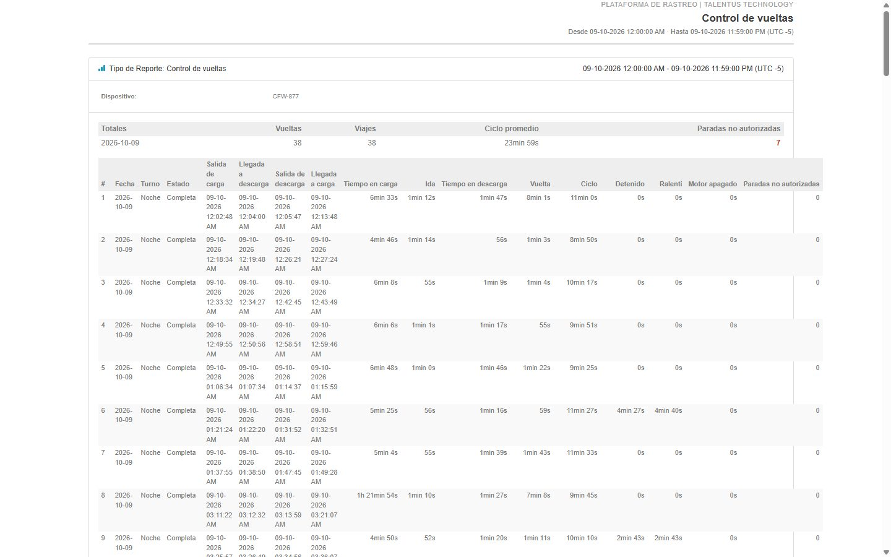
Reporte generado en HTML.
8.1 Reportes más usados
Reporte
Para qué
Información general / Viajes y paradas
Kilómetros, tiempos de conducción, paradas y ralentí por vehículo y día.
Exceso de velocidad / en geocerca
Infracciones con hora, lugar y velocidad.
Geocercas (entrada/salida, tiempo dentro)
Visitas a zonas y tiempo de permanencia.
Eventos
Listado de alertas disparadas.
Combustible, horas motor, sensores
Consumo, rellenos, horómetro y gráficas de sensores.
Cumplimiento de programación de rutas
Salidas a tiempo, adelantos y retrasos contra el horario (capítulo 12).
Control de vueltas, Paradas en operación, Horas trabajadas netas, Abastecimiento NUEVO
Reportes del módulo de Operaciones (capítulo 14).
9. Enviar comandos
Un comando es una orden al GPS: bloquear o desbloquear motor, pedir posición, reiniciar, configurar. Menú → Enviar comando.
Pulsa Enviar comando. Elige la conexión: GPRS (datos, inmediato si el equipo está en línea) o SMS (por la SIM, útil sin cobertura de datos).
Marca «Enviar automáticamente al conectarse» si el vehículo está fuera de línea: se enviará cuando vuelva.
Elige el dispositivo y el comando (lista según el modelo de GPS, o una plantilla). Algunos piden parámetros.
Enviar comando. El resultado queda en Registros; los pendientes, en En cola.
Horario: programa un comando para una hora exacta, cada hora, diario, semanal o mensual (por ejemplo, apagar motor fuera de turno).
Plantillas de GPRS / SMS: comandos propios para reutilizar.
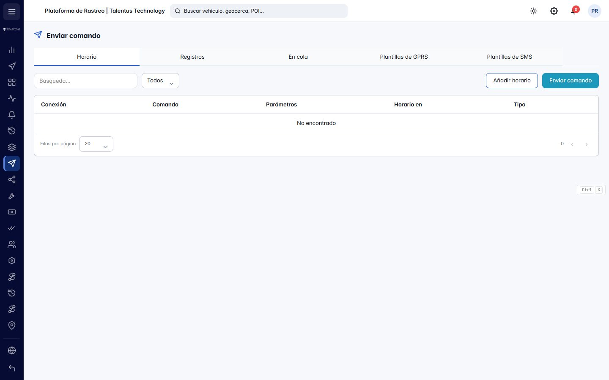
Enviar comando: pestañas Horario, Registros, En cola y Plantillas.
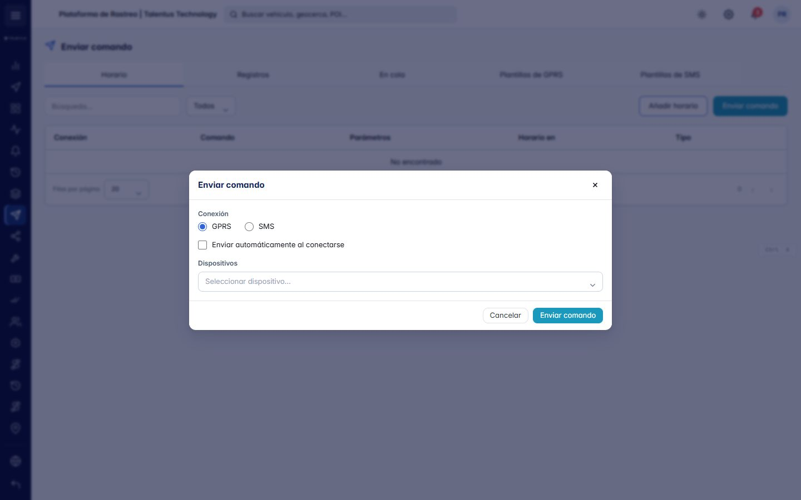
Formulario de envío.
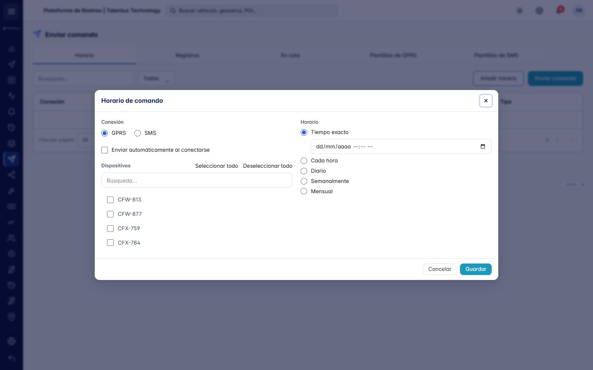
Comando programado por horario.
El bloqueo de motor es irreversible hasta que envíes el desbloqueo. Úsalo solo con el vehículo detenido y siguiendo el procedimiento de tu empresa.
10. Compartir vehículos
Crea un enlace público para que un cliente o un familiar siga uno o varios vehículos sin cuenta en la plataforma. Menú → Compartir → +.
Nombre y descripción del enlace.
Expira por: ninguna, duración (horas o días) o fecha fija. «Eliminar al expirar» lo borra solo.
Vehículos a compartir (por grupo o uno a uno).
Opcional: enviar el enlace por Email o SMS (varios separados por punto y coma).
Guardar. En la lista puedes copiar el enlace, desactivarlo o eliminarlo.
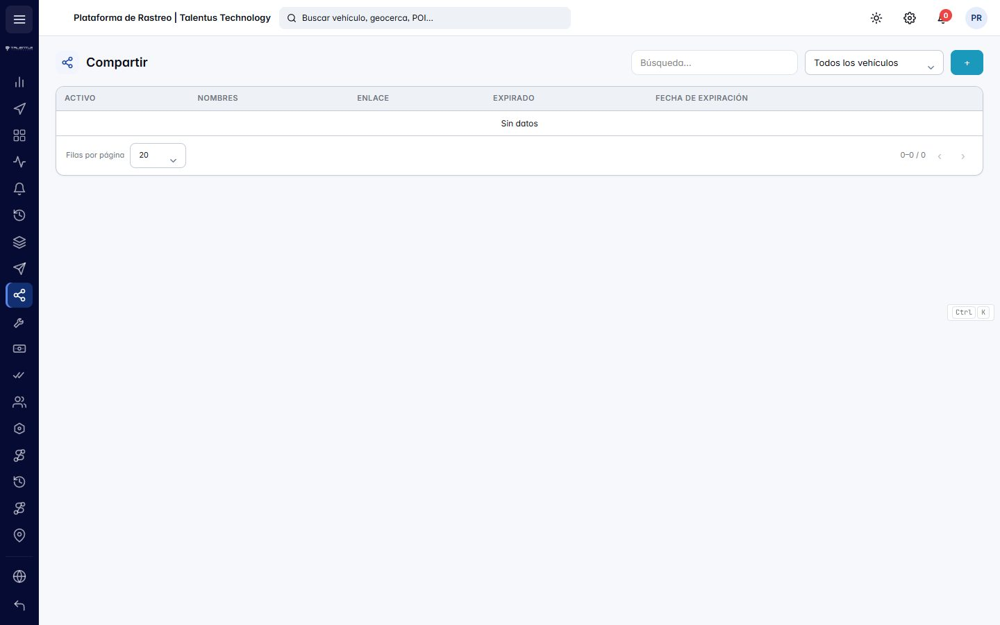
Enlaces compartidos.
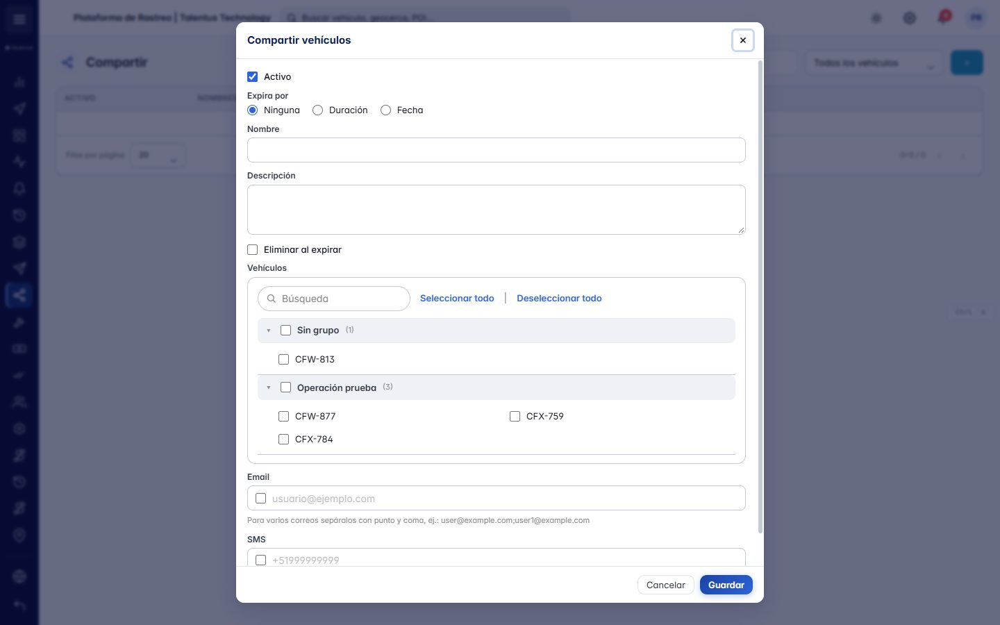
Compartir vehículos: vigencia, vehículos y envío.
11. Geocercas
Una geocerca es una zona dibujada en el mapa. Sirve para alertas de entrada y salida, límites de velocidad por zona, reportes de permanencia y, ahora, como punto de una operación. Menú → Geocercas (se abre el panel sobre el mapa).
11.1 Crear
Pulsa + y elige Polígono, Círculo o Corredor (franja a lo largo de una línea).
Dibuja en el mapa: clic para cada vértice y doble clic para cerrar (polígono o corredor); clic y arrastre para el círculo.
Completa Nombre, Color, Grupo, CategoríaNUEVO (carga, descarga, inicio/fin de ruta, grifo, taller, descanso), Vehículo (para geocerca móvil que sigue a un vehículo), Radio (círculos) y Límite de velocidad.
Guardar.
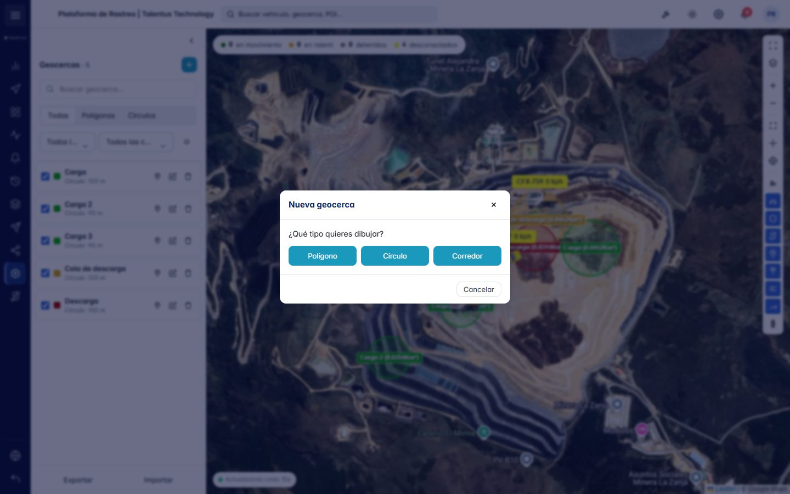
Tipo de geocerca a dibujar.
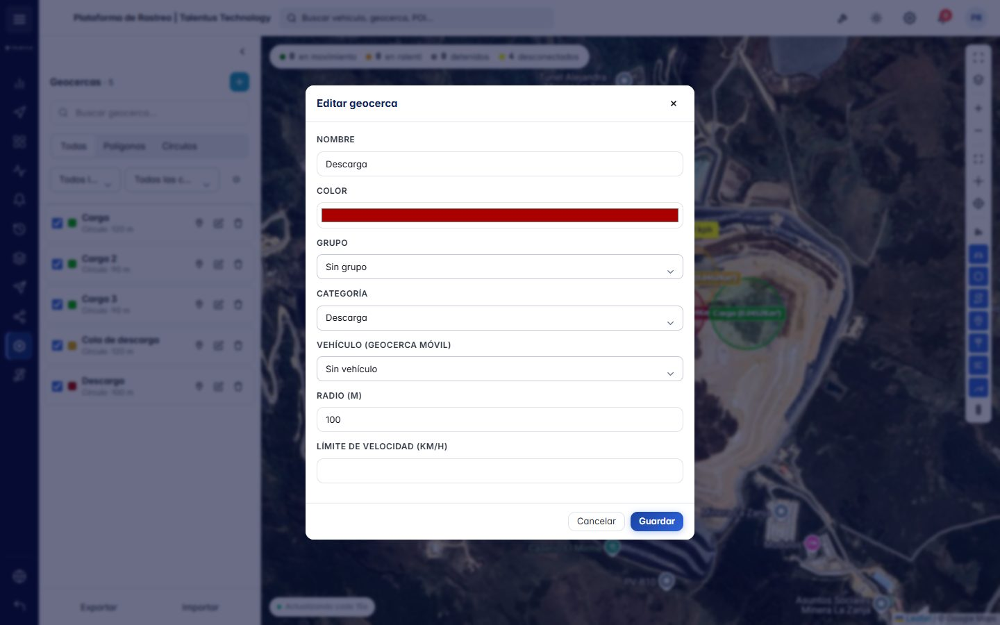
Formulario de la geocerca.
11.2 Lista y filtros
Búsqueda, filtro por forma (polígonos / círculos), por grupo y por categoría. La casilla de cada fila la muestra u oculta en el mapa; los iconos centran, editan o eliminan. Abajo: Exportar e Importar (KML, GeoJSON, JSON).
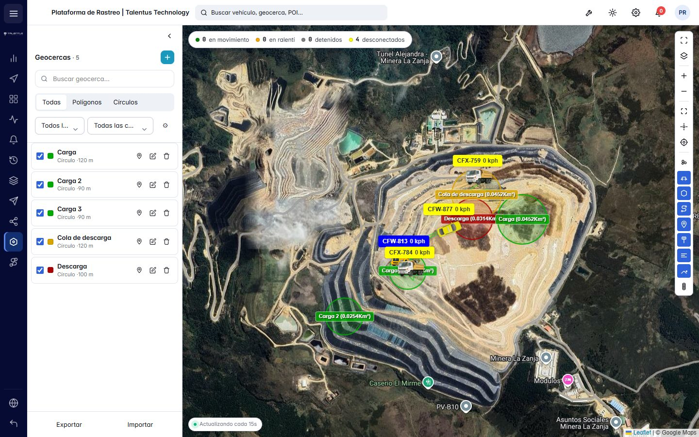
Panel de geocercas con filtro por categoría.
11.3 Alertas con geocercas
Entrada / Salida / Entrada-Salida: crea la alerta (capítulo 7), elige el tipo y en la pestaña Geocercas marca las zonas.
Exceso de velocidad en geocerca: usa el límite de la zona. El límite puede diferenciarse por tipo y estado de vehículo (cisterna cargada o vacía) desde Ajustes de cuenta → Tipos de vehículo.
Si varias geocercas se solapan, manda la de menor área.
Una geocerca usada como punto de una operación no se puede eliminar hasta quitarla de la operación. Las geocercas móviles no se aceptan como punto.
12. Rutas y programaciones de ruta
12.1 Rutas
Una ruta es un trazado de referencia (ida de A a B). Menú → Rutas → + Nueva ruta: clic para añadir puntos, doble clic para terminar; nombre, color y grupo; Guardar. Se pueden exportar e importar, y mostrarse en el mapa en vivo, en el historial y en el monitoreo.
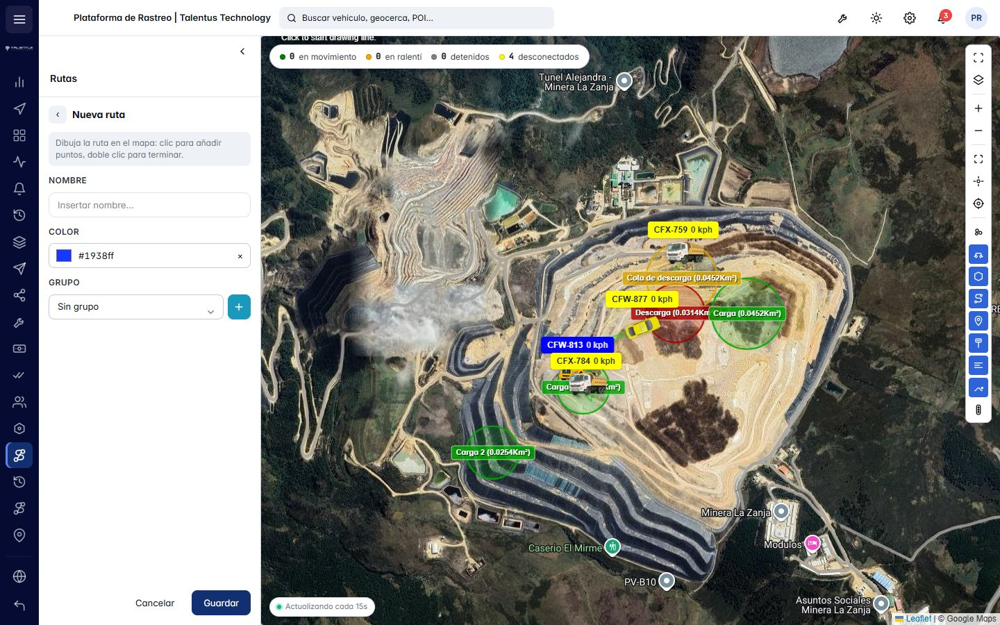
Dibujo de una ruta nueva.
12.2 Programaciones de ruta
Define horarios de salida sobre una ruta y controla el cumplimiento. Menú → Programaciones de ruta → + Nueva programación.
Nombre, Ruta y días de la semana.
Salida de ida y, opcionalmente, salida de vuelta.
Tolerancias de adelanto y retraso en minutos.
Vehículos asignados y «Activa». Guardar.
La pestaña Cumplimiento de programación de rutas muestra, por fecha y vehículo, si salió a tiempo, adelantado o con retraso; «Solo incumplimientos» filtra los problemas. El mismo contenido está en el reporte del capítulo 8.
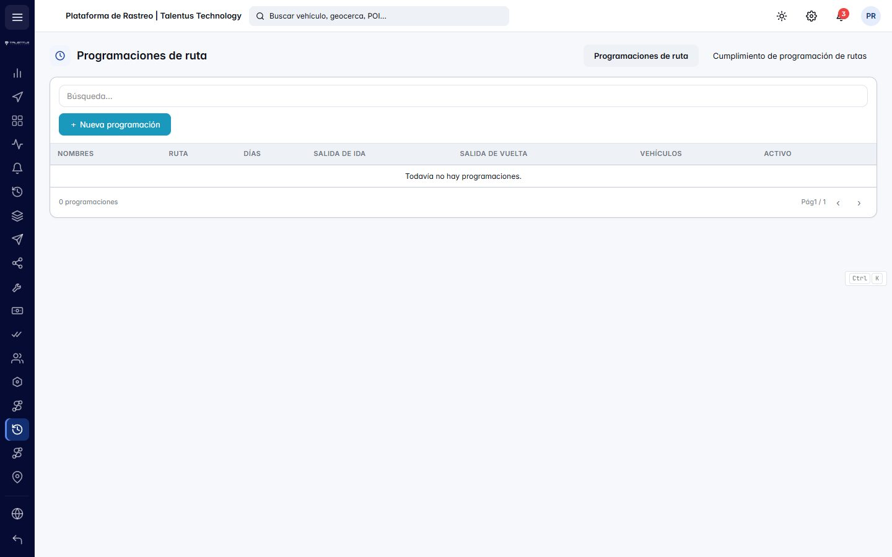
Programaciones de ruta y cumplimiento.
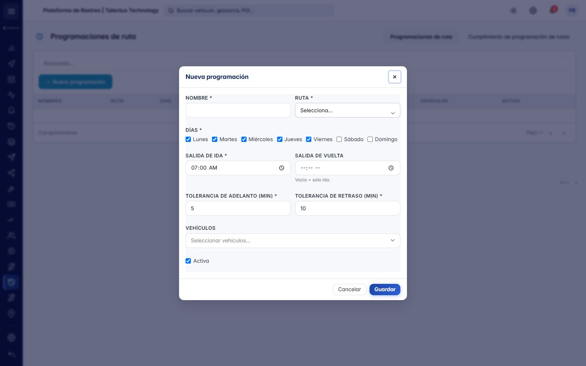
Nueva programación.
13. Puntos de interés (POI)
Marcadores fijos con nombre e icono (planta, almacén, grifo, cliente). Menú → POI → +, clic en el mapa donde va el punto, nombre, descripción, icono y grupo, Guardar. Se agrupan, se filtran por grupo (⚙ administra los grupos), se exportan e importan, y tienen alertas propias: «PDI – duración de la parada» y «PDI – duración en ralentí».
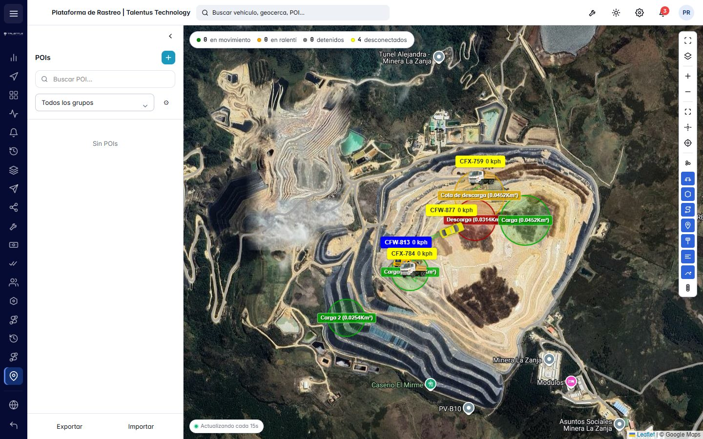
Panel de puntos de interés.
14. Operaciones (control de vueltas) NUEVO
Cuenta las vueltas entre puntos de carga y descarga (o inicio y fin de ruta), mide cada tramo y detecta paradas no autorizadas. Requiere el permiso «Operaciones», que activa el administrador.
14.1 Configurar
Crea las geocercas con categoría Carga y Descarga (o Inicio / Fin de ruta), y si aplica Grifo, Taller, Descanso (zonas donde parar está autorizado).
Crea un grupo de vehículos con las unidades de la operación.
Menú → Operaciones → pestaña Operaciones → + Nueva operación: nombre, tipo, grupo, puntos, turnos (pueden cruzar la medianoche) y, en opciones avanzadas, segundos de parada, permanencia mínima, tramo máximo, categorías autorizadas y descuentos de horas trabajadas.
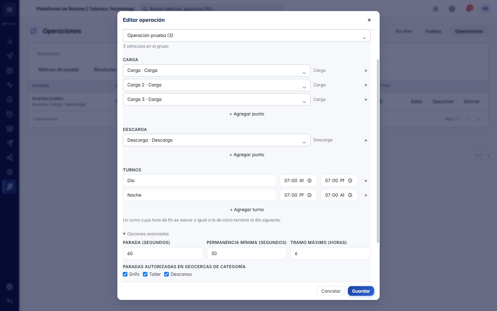
Operación: puntos, turnos y opciones avanzadas.
14.2 Seguir y revisar
En vivo: estado de cada vehículo (En carga, Ida, En descarga, Vuelta), vueltas del día, ciclo promedio, paradas no autorizadas. Se actualiza cada 20 s.
Vueltas: una fila por vuelta con tiempos de ida, vuelta, ciclo, detenido y ralentí; el detalle muestra tramos y paradas, con «Ver tramo en mapa» y Justificar para registrar el motivo de una parada.
Recalcular vueltas rehace un rango pasado tras cambiar geocercas o umbrales. Motivos de parada administra el catálogo de justificaciones.
Reportes 910 Control de vueltas, 911 Paradas en operación, 912 Horas trabajadas netas y 913 Abastecimiento; alerta «Parada en operación».
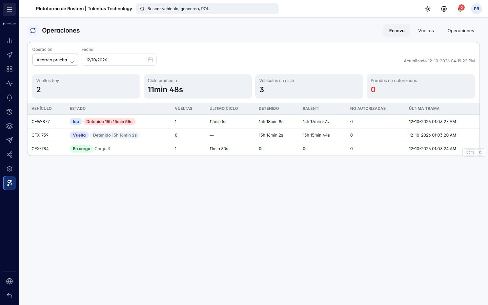
Pestaña En vivo.
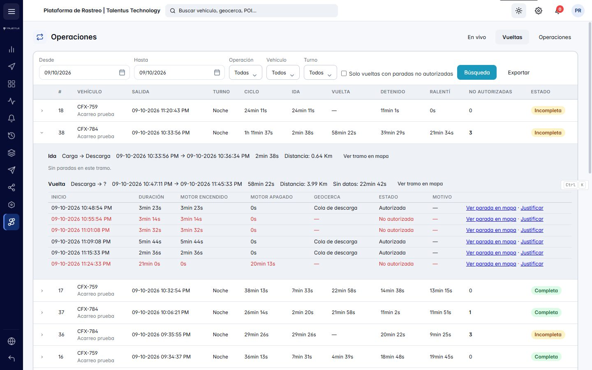
Pestaña Vueltas con el detalle de una vuelta.
El manual de pruebas del módulo de Operaciones describe este módulo en detalle, con capturas de cada pantalla.
15. Seguridad · Control de flota NUEVO
Tablero de seguridad y productividad por unidad, pensado para el reporte diario del área de seguridad: cuánto se movió cada unidad, a qué velocidad, cuántos excesos, salidas de zona, desconexiones y, si la unidad lo tiene, alertas de cinturón. Requiere el permiso «Seguridad» (lo activa el administrador).
15.1 Filtros
Flota: tipo de vehículo (volquete, camioneta…; se asignan en la ficha del vehículo, pestaña Información).
Turno: Ambos, Día o Noche. Las horas del turno se definen en Ajustes (por defecto Día 07:00–19:00; la noche se atribuye al día en que empieza).
Desde / Hasta, Dispositivo.
Vigencia (min): cuántos minutos sin trama hacen que una lectura deje de considerarse vigente.
Límite manual (km/h): velocidad a partir de la cual se cuenta un exceso fuera de geocercas. Dentro de una geocerca con límite manda la geocerca. Vacío: fuera de geocercas no se cuenta.
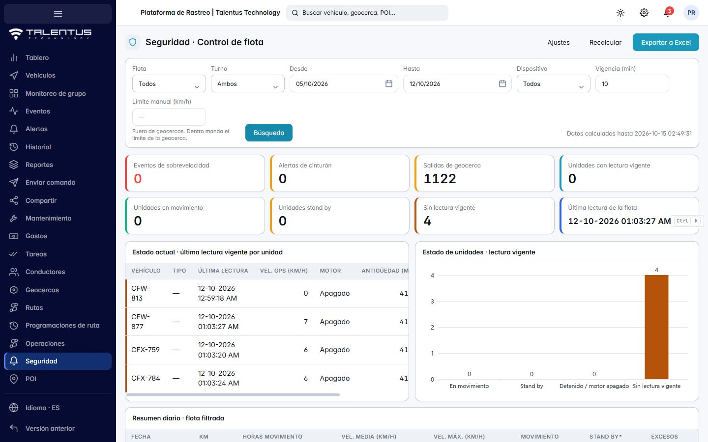
Seguridad: filtros, ocho tarjetas, estado actual por unidad y su gráfico.
15.2 Qué muestra
Tarjetas: eventos de sobrevelocidad, alertas de cinturón, salidas de geocerca, unidades con lectura vigente, en movimiento, stand by, sin lectura vigente y última lectura de la flota.
Estado actual: última lectura de cada unidad, velocidad GPS, motor, antigüedad en minutos y estado (En movimiento ≥ 1 km/h; Stand by = motor encendido sin moverse; Detenido / motor apagado; Sin lectura vigente).
Resumen diario: por fecha, km, horas de movimiento, velocidad media (km ÷ horas de movimiento), máxima GPS, unidades con movimiento, en stand by y excesos.
Gráficos: unidades por estado diario, velocidad media por unidad, excesos por día y estado vigente de la flota.
Resultado por unidad y detalle diario por unidad (km, motor, movimiento, paradas, registros, excesos, cinturón).
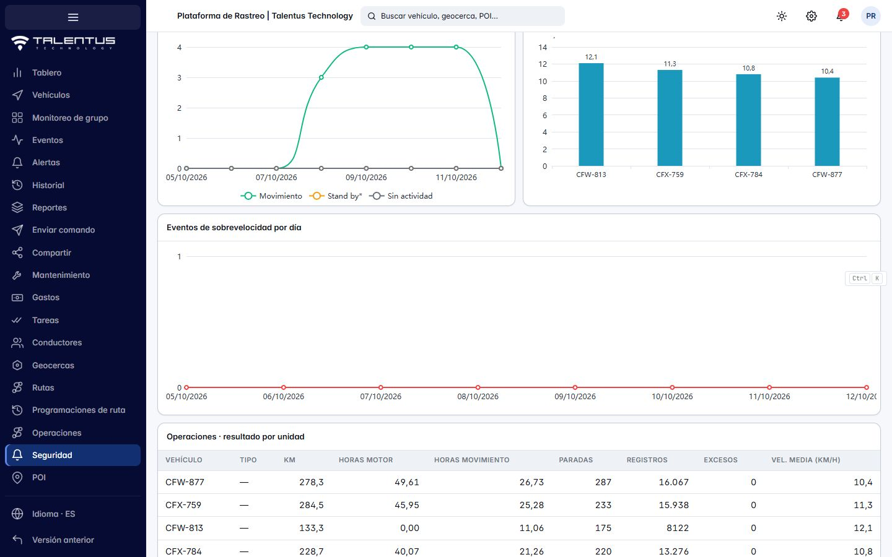
Gráficos y resultado por unidad.
15.3 Cómo se calcula cada dato
Dato
Origen
Sobrevelocidad
Suma de los eventos de las alertas de exceso (normal y en geocerca) y de los tramos calculados con las posiciones; un evento dentro de un tramo calculado cuenta una sola vez.
Salidas de geocerca
Cada salida de una geocerca del usuario dentro del turno.
Desconexiones
Eventos de corte de energía y de fuera de línea, más los huecos de señal mayores al ajuste «Corte de señal».
Alertas de cinturón
Solo en unidades con sensor de cinturón: tramos de 30 s o más con el cinturón suelto y el vehículo en movimiento. Sin sensor, la celda queda vacía.
Stand by* diario
Hubo horas de motor pero cero horas de movimiento en el período filtrado. No es el estado actual.
15.4 Ajustes, recalcular y exportar
Ajustes: inicio y fin del turno Día, parada mínima (minutos) y corte de señal (minutos). Al cambiarlos, o al cambiar el límite manual, la pantalla avisa que hay que recalcular.
Recalcular: rehace los datos del rango elegido (hasta 31 días desde la pantalla). El proceso automático recalcula cada hora el día de hoy y el de ayer.
Exportar a Excel: descarga un libro con las hojas Seguridad, Operaciones, Datos y Telemetría, con los mismos filtros y los cuatro gráficos. Admite rangos de hasta 93 días.
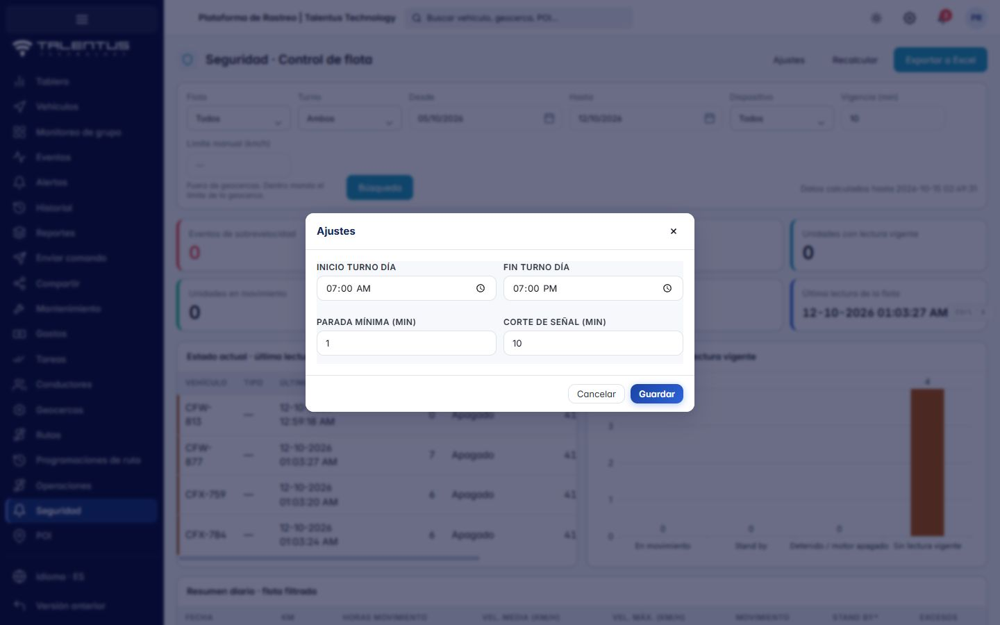
Ajustes del turno y de los umbrales.
Qué probar
Cambiar turno, fechas y unidad y ver que cambian las tarjetas, tablas y gráficos.
Poner un límite manual, recalcular y comprobar que aparecen excesos; quitarlo y recalcular.
Exportar y comparar las cifras del Excel con la pantalla.
16. Mantenimiento (servicios)
Programa servicios por odómetro, horas de motor o días, y recibe aviso antes de que venzan. Menú → Mantenimiento lista todos los servicios con la distancia, horas o días restantes.
Abre la ficha del vehículo → pestaña Servicios → + Añadir servicio.
Nombre (cambio de aceite, revisión de frenos), Expira por odómetro, horas de motor o días, Intervalo y Último servicio (valor en que se hizo).
Generar evento cuando falten X km, horas o días: crea el aviso anticipado; opcionalmente correo.
«Renovar servicio al expirar» reprograma el siguiente automáticamente. Guardar.
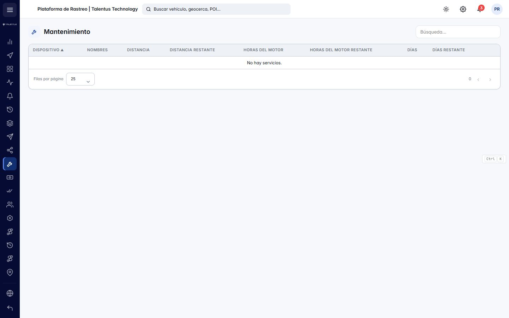
Lista de servicios y lo que resta para cada uno.
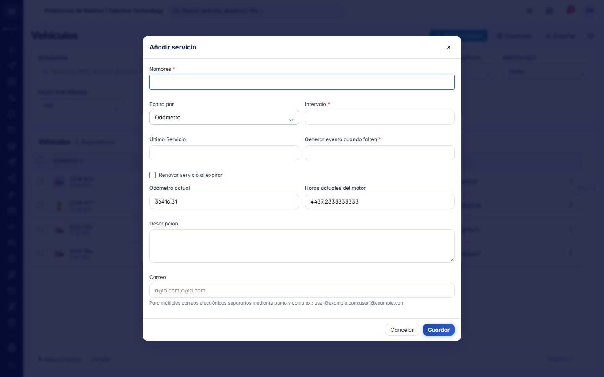
Añadir servicio.
17. Gastos
Registra combustible, peajes, repuestos y cualquier costo por vehículo. Menú → Gastos → +: vehículo, nombre, fecha y hora, tipo (los tipos se administran en Ajustes de cuenta), cantidad, costo unitario, proveedor, comprador y notas. La lista filtra por vehículo, fechas y texto, y muestra el total del periodo. Los mismos gastos aparecen en la pestaña Gastos de la ficha del vehículo y en el reporte «Costo de operación».
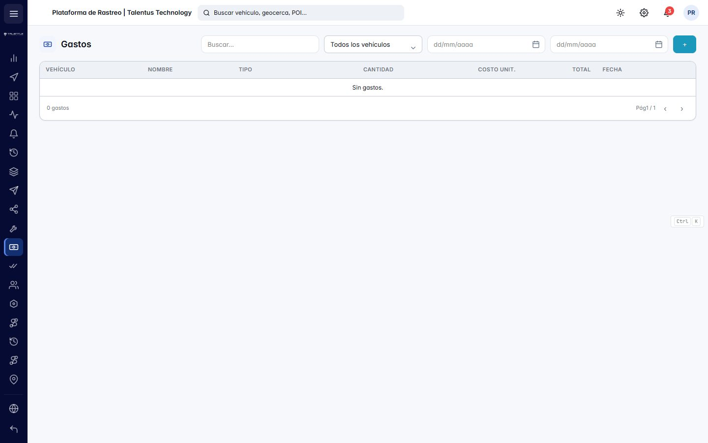
Lista de gastos.
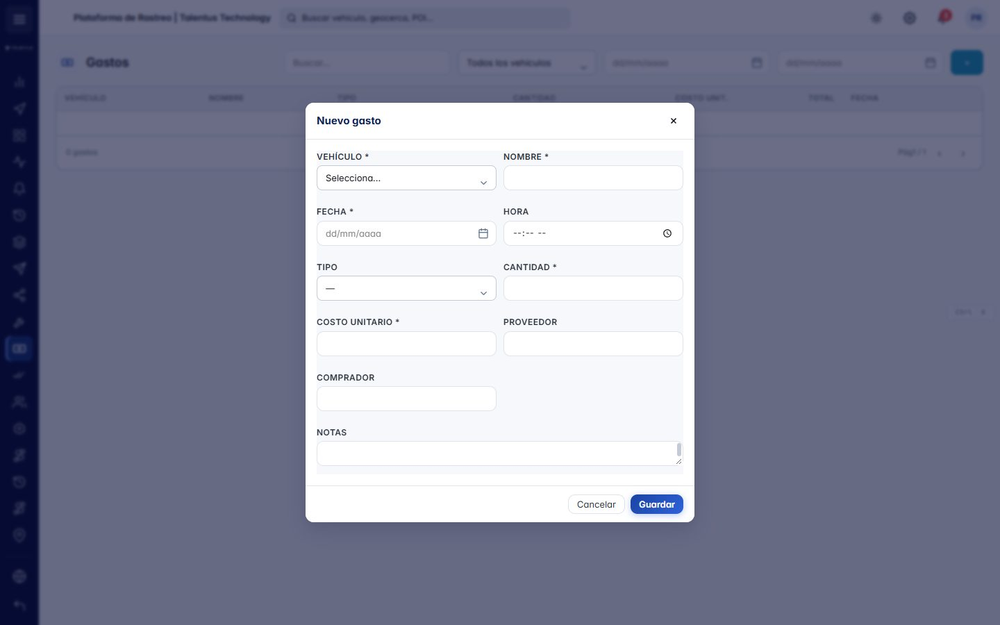
Nuevo gasto.
18. Tareas y conductores
17.1 Tareas
Órdenes de recogida y entrega asignadas a un vehículo. Menú → Tareas → +: vehículo, título, número de factura, prioridad, conjunto de tareas; dirección y ventana horaria de recogida y de entrega, con cambio automático de estado al permanecer X segundos dentro de un radio. Los estados (nueva, en progreso, terminada, fallida) se ven en la lista y disparan la alerta «Estado de la tarea». Los conjuntos de tareas agrupan varias entregas de una misma jornada; también se importan desde archivo.
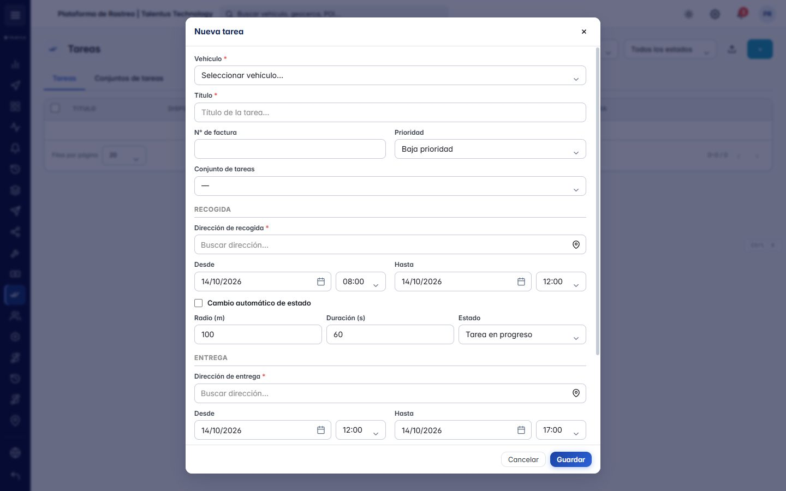
Nueva tarea con recogida y entrega.
17.2 Conductores
Menú → Conductores → +: nombre, vehículos en los que puede ir, «establecer como actual», RFID o iButton, correo, teléfono y descripción. Con lector RFID en el vehículo, el conductor se identifica solo y las alertas «Cambio de conductor» y «Autorización» avisan de conductores no autorizados. El conductor actual se muestra en la ficha del vehículo y en los reportes.
Nuevo conductor.
19. Tablero (panel de control)
Resumen de la flota para un periodo (hoy, ayer, semana, mes o rango): total, en movimiento, inactivos, detenidos, sin datos, velocidad promedio y utilización; estado de dispositivos (buen estado / requieren atención / mal estado), de conexión y de movimiento en vivo; conducción y comportamiento (puntuación de flota, frenados, aceleraciones, giros bruscos, excesos de velocidad), ranking de mejores y peores vehículos, kilometraje, tareas y notas. Los widgets se eligen en Ajustes de cuenta → Tablero.
Panel de control.
20. Monitoreo de grupo
Varios mapas a la vez, uno por vehículo, para una sala de control. Menú → Monitoreo de grupo: elige el número de celdas (2 a 32) y, en cada celda, el vehículo a seguir. Cada mapa sigue a su vehículo en vivo con el color por velocidad, el halo del seleccionado y la animación de movimiento; se pueden mostrar geocercas, POI, rutas y la cola de recorrido. La selección y el tamaño se recuerdan en el navegador.
Monitoreo de grupo.
21. Ajustes de cuenta
Engranaje de la barra superior. Pestañas:
Pestaña
Contenido
Principal
Unidades (distancia, capacidad, altitud), formato de duración, fecha y hora, inicio de semana, zona horaria, horario de verano, mapa por defecto.
Grupos de vehículos
Crear y editar grupos (también desde el mapa).
Conductores
Acceso rápido al listado.
Tipos de vehículo
Tipos y estados (cargado / vacío) para límites de velocidad diferenciados por geocerca.
Eventos
Eventos personalizados del equipo GPS (pánico, aceleración brusca…) y cómo se muestran.
SMS gateway, Plantillas de SMS y GPRS
Envío de SMS y comandos propios.
Widgets y Tablero
Qué tarjetas se ven en la ficha del vehículo y en el panel de control.
Cliente
Datos de contacto de la cuenta.
Ajustes de cuenta, pestaña Principal.
22. Preguntas frecuentes
Un vehículo sale «Desconectado» aunque está encendido. Revisa cobertura y SIM; en la ficha, «Última señal» indica la hora de la última trama. Si pasó más del tiempo límite configurado, se marca desconectado.
No me llegan las notificaciones. En la alerta, pestaña Notificaciones, confirma el canal (push requiere la app instalada y sesión iniciada; correo requiere el email confirmado en el menú de usuario).
El historial no muestra nada. Verifica el rango de fechas y que el vehículo transmitió en ese periodo; prueba «Mostrar coordenadas no válidas».
Aparece «ralentí» en un vehículo que está apagado. Falta o está mal configurado el sensor de encendido (ficha → Sensores).
No veo Operaciones en el menú. El administrador debe darte el permiso.
Quiero la interfaz anterior. Menú de usuario → «Volver a UI clásica» (o el último icono del menú lateral).
Soporte: desde la pantalla de acceso, «Nuestro equipo se encuentra 24/7» con los canales de contacto de Talentus Technology.